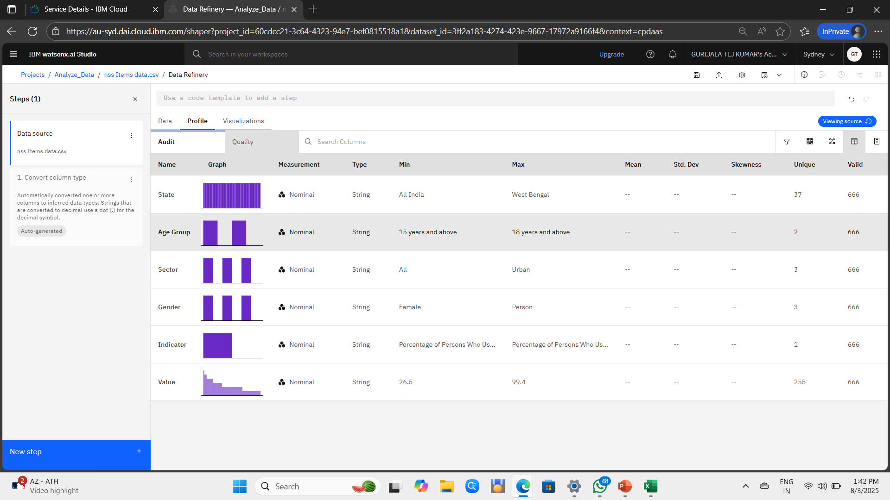

Computer Science undergraduate graduating in 2026 with strong foundations in Python, data structures, and cloud-based application development
Bachaleor of Technology(B.Tech), Computer Science and Enginnering
Sreenivasa Institute of Technology and Management Studies, Chittoor
CGPA: 7.9 | Expected Graduation: 2026
The Face Recognition System is a computer vision–based application that automatically detects and recognizes human faces from images. The system is designed to identify a person by comparing facial features with stored data.
This project demonstrates the practical application of machine learning, image processing, and Python programming.

This project focuses on analyzing access to improved drinking water sources in India, using data from the 78th Round Multiple Indicator Survey (MIS). Despite national development programs and SDG initiatives, significant regional and socio-economic disparities still exist, especially between rural and urban areas.

The project uses data analytics and cloud-based tools (IBM Cloud) to identify patterns, inequalities, and correlations that can support evidence-based policymaking.